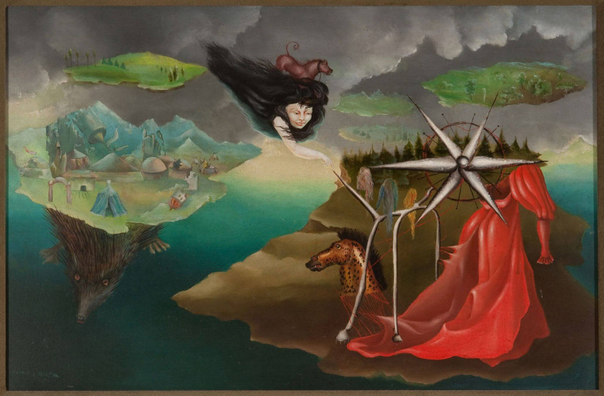
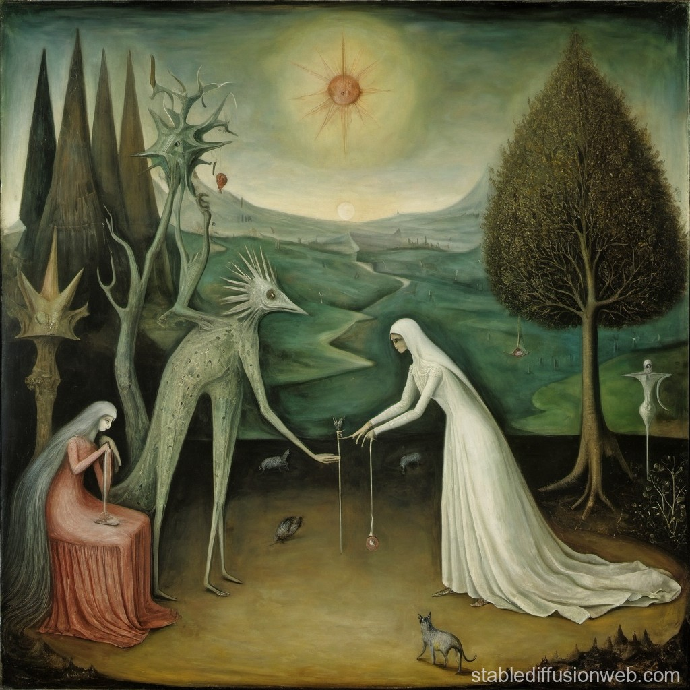

Surrealimo y estilo artístico.
Carrington se aferró por primera vez al surrealismo tras ver su primera pintura surrealista a los diez años, cuando visitó la galería parisina de la margen izquierda. Recibió poco apoyo de su padre para su carrera artística, pero su madre fue más alentadora. A pesar de la falta de apoyo familiar, Carrington continuó su carrera artística.
En 1935, Carrington pasó un tiempo estudiando en la Chelsea School of Art. Sin embargo, no permaneció mucho tiempo allí, trasladándose a la Academia de Bellas Artes Ozenfant. Un año después, su madre le regaló el libro Surrealismo, escrito por Herbert Read. Carrington viajó a Londres para visitar su primera Exposición Surrealista Internacional cuando tenía 19 años.
La obra de Max Ernst, en particular, llamó su atención. Carrington se sintió especialmente atraído por Two Children are Threatened by a Nightingale (1924). Al año siguiente, Carrington conoció a Ernst, y esto marcó el inicio de una relación cercana, personal y profesional entre ambos.
Leonora Carrington y Max Ernst
Aproximadamente seis meses después de que Carrington viera por primera vez la obra de Ernst en la primera Exposición Surrealista Internacional, ambos se conocieron en Londres. Carrington estudiaba en la Academia Ozenfant y Ernst estaba en Londres para la exposición. Ursula Blackwell, compañera de clase de Carrington, invitó a cenar tanto a Ernst como a Carrington, y se enamoraron casi al instante. Poco después de la fiesta, los dos artistas partieron juntos a París, donde Ernst se divorció de su esposa.
Mientras estuvo en París, Carrington conoció a Yves Tanguy, André Breton y Leonor Fini. Carrington, pintor surrealista, también participó en la Exposición Internacional del Surrealismo parisino de 1938. Además, expuso sus obras en Ámsterdam en una exposición surrealista, que consolidó su posición como artista surrealista. A pesar de ello, Carrington no se veía a sí misma como surrealista
Aunque compartía muchos valores surrealistas, incluido el desprecio por los dogmas burgueses, Carrington se mantuvo autónoma en su expresión artística. Su obra va mucho más allá del entorno egocéntrico de la ortodoxia surrealista, y Carrington nunca se atribuyó al uso de motivos surrealistas comunes en su obra.

Carrington y Ernst se mudaron a Saint Martin d'Ardeche, en el sur de Francia, donde establecieron una colaboración y relación. La pareja decoró su casa de San Martín con esculturas de cada uno de sus animales guardianes. La creación de Carrington fue una cabeza de caballo en yeso, mientras que Ernst esculpió sus pájaros.
Carrington ya estaba bien avanzada en su carrera artística como pintora surrealista, habiendo pintado La posada del caballo del alba entre 1937 y 1938. En 1939, Carrington pintó El retrato de Max Ernst, que captura una sensación de ambivalencia relacional. La pareja organizaba frecuentemente reuniones con su círculo surrealista, pero Carrington permaneció firmemente en la periferia del movimiento.
Los miembros del movimiento surrealista tenían una actitud ambivalente hacia las mujeres. La idea freudiana de que la psique de la mujer era mística, erótica y desenfrenada era la opinión de muchos surrealistas, incluido André Breton. Como resultado, muchas artistas surrealistas femeninas fueron retratadas como la femme enfant, o la niña mujer, que no eran más que musas para los artistas masculinos.

Carrington no era de las que asumían ningún papel sumiso, y se sabe que dijo que no tenía tiempo para ser musa de nadie porque estaba demasiado ocupada luchando contra su familia y convirtiéndose en artista por derecho propio.